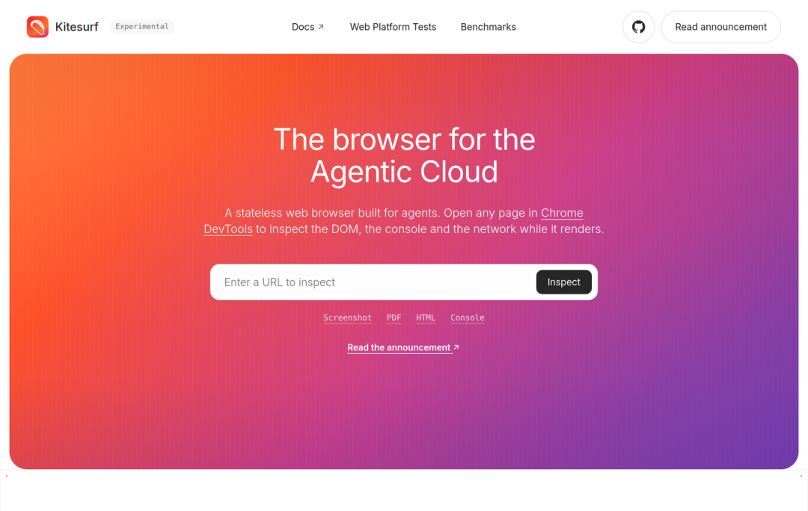
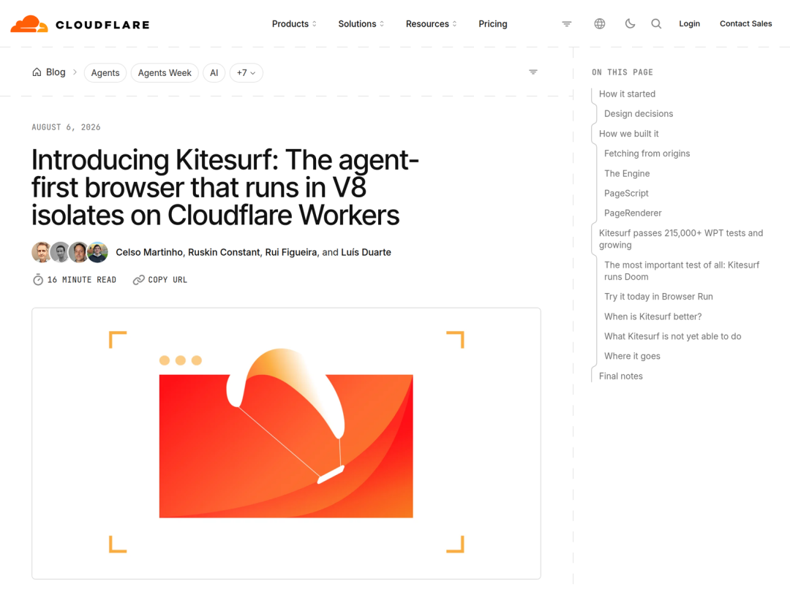
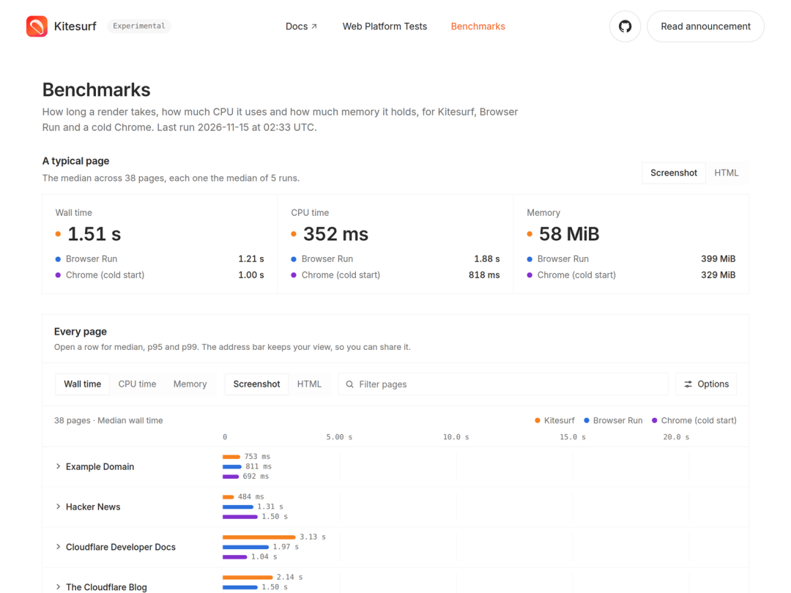
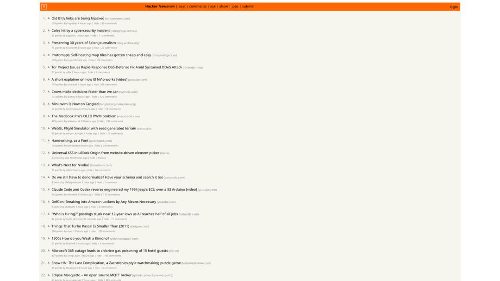

——Kitesurf：给 AI Agent 用的浏览器引擎，12 周、1600 星、不用 Chrome
原创 ｜ 机器虾 ｜ 全文约 4,000 字，阅读约 10 分钟
让一个 AI Agent 上网，第一件事是给它开个浏览器。第二件事，是看账单。
Chromium 一个实例，300–400MB 内存。一个 Agent 一个实例，十个就是 3–4GB；再乘上并发数，账单会变得很直接——Agent 上得起网，但上不起很多次网。
Cloudflare 的解法不是把 Chromium 优化一遍，而是把浏览器拆了重造：只留 Agent 真正用得上的那部分——解析 HTML、应用 CSS、跑页面 JS、渲染截图。名字叫 Kitesurf。
8 月 6 日发公告，仓库 1,631 star。最硬的一个数字是内存：官方 14 个 URL 的基准里，截图用 57.8 MiB，Chromium（热池）是 271 MiB；HTML 抽取那组 39.4 对 273.7 MiB。省 4.7 倍到 7 倍。

一、Agent 上网为什么贵
成本结构就三样：内存 × 并发 × 时长。
浏览器是个桌面应用的底子。它有标签页、主题、插件、书签、多用户配置、GPU 进程、渲染进程——这些东西是给人用的，为的是让人同时开二十个页面还不卡。
Agent 不需要这些。Agent 要的是：打开一个 URL，等页面稳定，把 DOM 或截图拿回来，关掉。
但只要你用 Chromium，你就得把整个桌面应用背在身上。一个 Agent 会话一个实例，内存按 300–400MB 起算；并发一上来，机器先撑不住。
算一笔粗账：一台 64GB 的机器，按 400MB 一个实例算，理论上一百多个会话就到顶了；再扣掉操作系统、容器、缓存，实际能跑的数量还要往下掉。而 Agent 的工作方式是「一阵一阵」的——白天抓取任务涌进来，晚上闲着。为峰值备机器，等于为闲置付钱。
所以现实情况很尴尬：只有最贵的模型、最贵的任务，才配用浏览器。 而截图、抽取、页面巡检这类最该自动化的便宜活，反而被浏览器的成本卡住。
还有一层隐性成本：浏览器要跑起来，得先有容器、有进程模型、有依赖库、有版本升级。你部署的不是一个函数，是一个小型桌面环境。运维的复杂度，跟内存一样，是按实例数线性增长的。
公告里那句话的意思很直白：Chromium 是为人类造的，Agent 不需要标签页、主题和插件。

二、Cloudflare 的答案：只留 Agent 用得上的部分
Kitesurf 的定位不是「更快的 Chrome」，是「Agent 专用的浏览器引擎」。它只做四件事：解析 HTML、应用 CSS、跑页面 JavaScript、渲染截图。
README 里写得清清楚楚：
parses HTML, applies CSS, runs page JavaScript, and renders screenshots without Chrome or a browser container.
注意最后半句：without Chrome or a browser container。没有 Chrome，也没有浏览器容器——不是把 Chromium 塞进沙箱，而是根本没有 Chromium。
三条设计原则，决定了它长成现在这样。
第一，测试先行。 它把 WPT（Web Platform Tests，各浏览器共用的标准测试集）当靶子，用测试驱动实现，而不是先堆功能再补兼容。这个选择很关键：浏览器的坑不在「能不能解析」，在「解析得对不对」。先有靶子再开枪，比先开枪再画靶子省时间。
第二，能 Rust 就 Rust。 核心组件直接用 wasm-bindgen 编译到 Wasm，不绕一层 JavaScript。少一层胶水，就少一层性能损耗和 bug。
第三，失败必须软着陆。 官方原话：any failure degrades to a blank frame or a missing element, never a dead session——任何失败都降级成一张空白帧或一个缺失元素，绝不让整个会话死掉。对 Agent 来说这条最重要：崩一次，任务就断了；少一个元素，还能继续跑。
这三条听起来都不惊艳，但合起来是一个取舍：不追求「什么网页都能开」，只追求「Agent 要的那些网页，稳定地开」。
还有一个细节值得单独拎出来：这个浏览器本身，大量代码是 AI Agent 写的。 公告作者四人，项目周期 12 周，首个 commit 在 5 月，灵感来自一个叫 obscura 的项目。
12 周做一个浏览器，听起来像吹牛。但它只做四件事、只跑在 Workers 上、只服务 Agent——把范围砍到这个程度，12 周就不是神话，是工程排期。
而团队自己也没吹。AGENTS.md 里写着：
Kitesurf is a proof of concept and many parts are incomplete.
一个用 Agent 写出来的浏览器，自己承认还不完整——这比任何发布会都诚实。
三、它是怎么跑起来的：四个组件
拆开看，Kitesurf 由四块组成。
• Engine：唯一对外、唯一有状态的组件，管 CDP 会话； • PageScript：每个页面一个 Dynamic Worker isolate，有干净的 globalThis 和 DOM； • PageRenderer：无状态光栅化，一次 RPC 调用直接拿回 PNG； • SandboxOutbound：唯一出网口，强制 CORS、每页独立 cookie jar、违规直接 403。
注意这个分工：状态被压缩到只剩 Engine 一个点，页面本身是隔离的、无状态的。 这也是它敢在 Workers 上跑的原因——每个页面是一个独立的 isolate，天生互不污染。
四个组件各自的取舍也值得说。
Engine 是唯一有状态的地方，因为它要维持 CDP 会话——客户端连上来，发指令，收事件，这条连接必须活着。把状态集中在一个点，好处是别的部分都能随便扩缩容。
PageScript 每页一个 isolate，globalThis 是干净的。这意味着一个页面里的脚本污染不了另一个页面，也污染不了宿主。对 Agent 场景来说，这是安全边界，不是性能优化。
PageRenderer 无状态，一次 RPC 拿回 PNG。无状态的好处很朴素：可以水平扩展，可以在任何机器上跑，挂了重试就行。
SandboxOutbound 是唯一出网口，强制 CORS，每页独立 cookie jar。多账号、多租户的场景，靠的就是这个「每页独立」——你的登录态不会漏到下一个任务里。
底层技术栈全是 Rust 生态：
Boa 这条最值得说：它在 Wasm 里再套一个 JS 引擎。 页面里的 eval 由 Boa 执行，而不是宿主环境的 JS——等于「运行时套运行时」。代价是兼容性要自己啃，收益是隔离和可控。
用 Bazel 构建也说明了一件事：这是个多语言、多目标的大型工程，不是一个人两周能改完的玩具。
四、数字：它到底快在哪、慢在哪
先看官方公告给的 14 个 URL 基准。
再来看官网 2026-11-15 更新的 38 页基准：
两组数字指向同一件事：CPU 省 3–4 倍，内存省 5–7 倍，但墙钟时间不是全面领先。
38 页那份基准里，Kitesurf 的截图墙钟是 1.51 秒，比 Browser Run 的 1.21 秒慢，比 Chrome 冷启动的 1.00 秒更慢。CPU 却是 352ms，比 Chrome 冷启动的 818ms 省一半多。
CPU 省、墙钟不省，这两个结论不矛盾。CPU 是「干了多少活」，墙钟是「你等了多久」。Kitesurf 干的活少，但它可能在等网络、等调度、等冷启动——这些时间不记在 CPU 上。省 CPU 不等于省时间，省时间也不等于省钱。
这就得拆开看了。按站点分层：
• Hacker News：Kitesurf 484ms，Chrome 冷启动 1.50s，快 3 倍； • Wikipedia：2.81s，Chrome 冷启动 0.87s，耗时约 3.2 倍； • MDN：1.61s 对 0.86s； • Cloudflare 博客：2.14s 对 1.00s； • El Mundo：10.5s，Chrome 冷启动 2.71s，耗时约 3.9 倍。
规律很清楚：页面越「文档化」，Kitesurf 越占优；越「重 JS」，越吃亏。
Hacker News 是纯文档，几乎就是「HTML + 一点 CSS」，它快得漂亮；新闻门户和 MDN 这类脚本多、依赖复杂的站点，它就要花时间补课。El Mundo 慢近 4 倍，说明重型媒体站的 JS 生态，还不是它的主场。
这个规律对选型有直接指导：如果你的任务集中在文档型页面——论坛、博客、文档站、商品页——它可能是降本首选；如果你的目标是重交互应用，先别急着迁。

这是 Kitesurf 自己渲染出来的 Hacker News，不是 Chromium 截的：

标准符合度方面，2026-11-13 的文档显示 WPT 已有 235,000+ 子测试通过：DOM 97%、HTML 96%、Selection 99%、SVG 97%、CORS/XHR 95%、URL 83%。它甚至能跑 Doom——silentspacemarine.com 那个 WebAssembly 版本。
能跑 Doom 是个很好的信号：它说明渲染和 Wasm 执行这条链路是通的，不是「只能截静态页」。但注意 URL 只有 83%，是这几项里最低的——URL 解析这种最基础的东西没到 95%，说明毛边还在底层。
这里必须补一句：WPT 只测标准符合度，不测真实网站可用性。 一个引擎可以通过 23 万个测试，然后在真实页面上卡在一个没实现的小特性上。这也是下一节要讲的「毛边」的来源。
五、它说 Chrome 的话：CDP 兼容
这一节可能是全文最实际的部分：迁移成本。
Kitesurf 实现了 CDP（Chrome DevTools Protocol），所以 Puppeteer、Playwright、chrome-remote-interface，甚至真正的 Chrome DevTools 前端，都能直接连它。Agent 侧接 chrome-devtools-mcp 就行。
换句话说：迁移成本约等于改一个 URL。
const browser = await puppeteer.connect({
browserWSEndpoint: "wss://<你的端点>?browser=kitesurf",
});
const page = await browser.newPage();
await page.goto("https://news.ycombinator.com");代码不用重写，工具链不用换，改连接地址即可。这是它最聪明的地方——不要求生态为它改变。
为什么兼容 CDP 比自造一套 API 聪明？因为 CDP 已经是事实标准。过去几年，所有浏览器自动化工具——Puppeteer、Playwright、各种 MCP server——都是围着 CDP 长的。新引擎要人迁过来，最贵的成本不是钱，是「重写一遍脚本」。Kitesurf 直接把这个成本砍掉了。
但也要说清代价：CDP 只是子集。你能连上，不代表每个命令都支持。真跑起来遇到不支持的域，还是得改代码——只是改的量，比从零适配小得多。
CDP 兼容还有一个隐性好处：可回退。同一套脚本，端点换回 Chromium，就能对照两边的渲染结果——迁移不再是「信或不信」，而是「比一比」。真出问题，切回去的成本也是一行地址。
这也是新引擎最难的一关：技术指标可以吹，生态迁移成本不能吹。
六、怎么用：三条路，外加一个彩蛋
第一条，Quick Actions。 在请求 URL 后面加 ?browser=kitesurf，原来的截图/抽取接口就换成 Kitesurf 渲染。适合已经在用 Browser Run、想先对比效果的人——一行参数，A/B 就有了。
第二条，Worker 里用 browser binding。 调 quickAction({ browser: "kitesurf" })，在代码里指定引擎。适合把截图/抽取写进业务流程的团队，切换粒度到单次调用。
第三条，直连 CDP 端点：
wss://api.cloudflare.com/client/v4/accounts/<ID>/browser-run/devtools/browser?browser=kitesurf适合已经有 Puppeteer/Playwright 脚本的团队，改地址就能接。
三条路的顺序，其实也是三种人的顺序：先用参数试效果的，再在代码里指定引擎的，最后才是改连接地址的。越往后，迁移越深，收益也越实。
想先看看效果，playground 免登录：kitesurf.dev。
想自己部署：pnpm install --frozen-lockfile，然后 pnpm run dev，起在 127.0.0.1:8787。注意需要 Workers Paid 套餐，因为要用 Dynamic Workers。
自部署这条路的真实门槛要说清：构建要 Bazel，跑起来要 Rust nightly。不是「clone 下来 npm install 就行」的项目——官方也没打算把它包装成人人可装的样子。
彩蛋是终端浏览器：brew install cloudflare/cloudflare/kitesurf，然后 kitesurf -m ansi。在 Kitty 终端里，它能直接把页面渲染成图。
beta 期间免费，但有每账号限额。免费+限额的组合，通常意味着「欢迎试，但别拿它跑生产」。
彩蛋这条更像技术演示：把页面渲染成 ANSI 字符打进终端，说明渲染器是独立的、可替换的——它不绑定在某个浏览器壳里。渲染能被拆出来单独用，这才是「引擎」两个字的含义。
七、现在还不行的地方，和一个必须说的安全警告
先说能力边界，官方文档写得很直接：不能播视频、不支持 WebGL；过不了需要真实 TLS 指纹的机器人挑战；不能维持长登录态会话；CDP 只是子集，不是全量；渲染不保证像素级一致。官方建议这些场景退回 Chromium 版。
这五条不是小事，每一条都对应一类真实需求：视频站、3D 页面、电商风控、需要登录的后台、像素级对比测试——这五类场景，现在都不该用它。
真实网站的毛边也还在。仓库 issue 里有几个典型例子：SVG mask 被忽略；shadow DOM 里百分比高度算错；localStorage 的键枚举出来变成了方法名；同源 iframe 里 CDP eval 不返回；并行开 5 个 session 会断连。
这些 bug 有个共同点：都不是「核心功能坏了」，而是「边缘特性没实现」。听起来不严重，但对 Agent 来说很致命——Agent 不会像人一样「绕过去」，它会在一个报错上反复重试，然后把整轮任务烧完。
这些不是「再修两周就好」的问题，是「一个浏览器要覆盖多少真实网页」的问题——而真实网页是无穷的。
然后是安全，这段请认真看。
Kitesurf 自己是零鉴权的。 而 workers.dev 的域名是公开且可预测的。这意味着：谁拿到你的 URL，谁就能用你的引擎上网、把它当 Puppeteer 代理、让请求从你的账号发出去、烧你的配额。
三个攻击面，一个比一个现实：第一，当免费代理用，你的出口 IP 变成别人的跳板；第二，烧配额，beta 期有每账号限额，被刷爆就是你的任务排队；第三，借你的账号发请求，出了问题算在你头上。
官方给的办法是挂 Cloudflare Access，而且最好在部署前就开——先部署后加 Access，中间存在一个公开窗口，窗口期里引擎是裸的。
如果你用 CDP 客户端穿 Access，得用 Service Token。
一个能替任何人上网的引擎，如果没有门，它就不是浏览器，是开放代理。
八、判断：真正变的是成本结构
抛开功能表，这件事的意义只有一个：浏览器的单位成本被改了。
300–400MB 变成 38–58MB，同样一台机器能跑的并发会话多 5–7 倍。按 64GB 内存粗算：400MB 一个，理论上一百六十个；58MB 一个，理论上能到一千一百个。同样的机器，多出近一个数量级的会话。
换算成钱更直观：同样一批任务，机器数量可以少一个档；或者同样的机器，能接的任务多几倍。
对截图、抽取、页面巡检这类 bursty（一阵一阵来）的活，这不是优化，是数量级变化——以前你要为峰值备机器，现在峰值可以摊平。
值得押注的三点：
• CDP 零迁移：现有 Puppeteer / Playwright 脚本改个地址就能跑； • 无状态、每页隔离：天然抗 prompt injection，一个页面被污染，不会带到下一个会话； • 官方说要让客户自己部署：这条路一旦走通，数据不出你的边界。
该冷静的四点：
• 仓库 2026-09-30 才建，到现在不到 7 周，0 个 release； • 自己跑要 Bazel + Rust nightly，门槛不低； • 重型站点慢 2–4 倍，别指望它全面替代； • beta 免费，随时可能变。
所以，谁现在就该试？每天批量截图、抽取、巡检的团队；已经有 CDP 脚本、想降成本的；能把 Access 配好再上线的。 谁先别碰？要播视频、要 WebGL、要过机器人挑战、要长登录态、要像素级还原的。
它不是更快的 Chrome。它改的是浏览器的计费单位——从「一台机器」，变成「一页」。
点个「在看」和「赞」，关注「机器虾」，AI 工具不迷路。🦐
参考
• GitHub 仓库：https://github.com/cloudflare/kitesurf • 官网：https://kitesurf.dev/ • 公告：https://blog.cloudflare.com/kitesurf/ • Browser Run 文档：https://developers.cloudflare.com/browser-run/kitesurf/